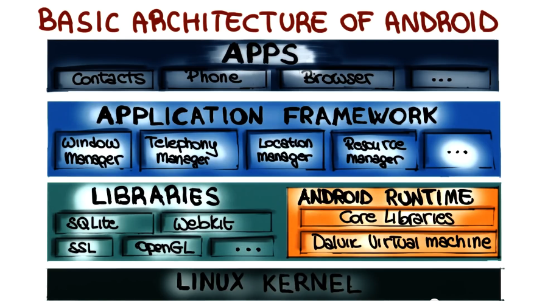
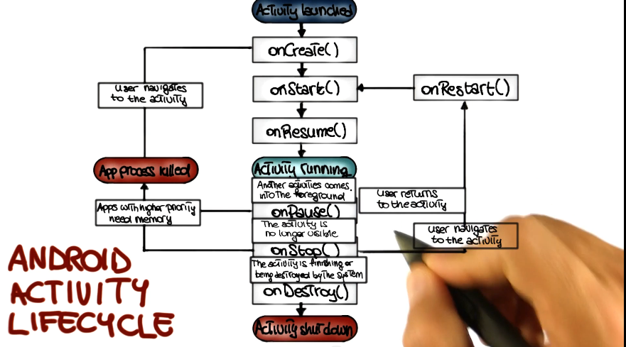

Software Dev Process Lecture Notes - Part 2 Lesson 3 - Android
Android Programming
- Android runs in Dalvik VM. Runtime for Java, optimized for mobile
- Basic architecture (descending order) 
Activities
- A single screen with a UI (e.g. phone dialer)
- Independent units, work together to form a cohesive whole
- Create an activity by extending the Activity class in the Android framework
Services
- A component that performas a usually long-running activity in the background, not interacting with the user.
- No UI, obviously
- Create a service by extending the Service class in the Android framework
- A way to tell the system something needs to keep happening even if app is closed
Content Provider
- provides a structured interface to a set of data
- sqlite data is android setup for database. frequently this is where you tie to with content provider
- sometimes also used by app to share data with other apps
- e.g. address book / contacts app sharing with other apps that want it
Broadcast Receiver
- Receiver that can be registered to receive system or application events
- sounds like a ‘listener’ to me
Intents
- Connect above components
- Abstract description of an operation to be performed
- consists of 2 main parts
- action to be performed (e.g. “call”)
- data action operates on (e.g. “phone number”)
- Provide developers with a way to perform late binding between applications at runtime
- How can this be done?
- Binding
- direct(activity)
- direct(service)
- broadcast (delivered to all receivers)
- this is why when you click a phone number you have to pick which app takes it. you broadcasted a call intent and each receiver chimed in that it could take it
- Binding
Manifests
- An XML file that declares all of the components of your app (broadcast receivers can be declared either here or at runtime)
- All the permissions required for your app to work
- Specifies the entry point for your app (which activity must be started to start the app)
- Declares version of the app
- Declares the lowest Android SDK for which the app is valid
Android Activity Lifecycle

- Apps get interrupted all the time. Apps must be able to deal with this. Gracefully if possible.